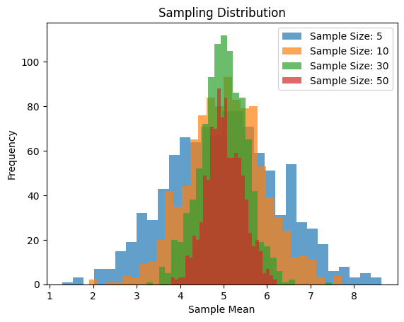

Problem 1
Exploring the Central Limit Theorem through simulations
Motivation
The Central Limit Theorem (CLT) is a cornerstone of probability and statistics, stating that the sampling distribution of the sample mean approaches a normal distribution as the sample size increases, regardless of the population’s original distribution. Simulations provide an intuitive and hands-on way to observe this phenomenon in action.
Here are the steps for CLT.
Step 1: Simulating Sampling Distributions
Start by generating data for three distinct population distributions:
1. Uniform distribution: Use numpy.random.uniform.
2. Exponential distribution: Use numpy.random.exponential.
3. Binomial distribution: Use numpy.random.binomial.
For example:
import numpy as np
# Uniform Distribution
uniform_population = np.random.uniform(0, 10, size=10000)
# Exponential Distribution
exponential_population = np.random.exponential(scale=2, size=10000)
# Binomial Distribution
binomial_population = np.random.binomial(n=20, p=0.5, size=10000)
# Display some basic information
print("Uniform Distribution - Mean:", np.mean(uniform_population), "Variance:", np.var(uniform_population))
print("Exponential Distribution - Mean:", np.mean(exponential_population), "Variance:", np.var(exponential_population))
print("Binomial Distribution - Mean:", np.mean(binomial_population), "Variance:", np.var(binomial_population))
Output:
Uniform Distribution - Mean: 4.975929262881268 Variance: 8.190846855965992
Exponential Distribution - Mean: 1.991324170407097 Variance: 3.8778654541766895
Binomial Distribution - Mean: 10.0012 Variance: 4.98579856
Step 2: Sampling and Visualization Create a function to: - Draw random samples of different sizes. - Compute the sample mean multiple times. - Plot histograms of sample means.
import matplotlib.pyplot as plt
def sampling_distribution(population, sample_sizes, num_samples=1000):
for size in sample_sizes:
sample_means = [np.mean(np.random.choice(population, size, replace=False)) for _ in range(num_samples)]
plt.hist(sample_means, bins=30, alpha=0.7, label=f'Sample Size: {size}')
plt.title('Sampling Distribution')
plt.xlabel('Sample Mean')
plt.ylabel('Frequency')
plt.legend()
plt.show()
# Example usage
sample_sizes = [5, 10, 30, 50]
sampling_distribution(uniform_population, sample_sizes)

Step 3: Parameter Exploration Analyze how different population shapes and variances affect the rate of convergence to normality. Experiment with changing: - The range of the uniform distribution. - The scale parameter of the exponential distribution. - The number of trials and probability in the binomial distribution.
Step 4: Reflecting on Real-World Applications Discuss how the CLT applies in practical contexts. For instance:
-
Estimating population parameters: The CLT allows confidence intervals and hypothesis tests to be applied even if the population distribution is unknown.
-
Quality control: Understanding the distribution of sample means helps ensure manufacturing processes stay within control limits.
-
Financial models: Aggregating returns over time benefits from CLT, assuming independence and identical distributions.
The Central Limit Theorem (CLT) is an elegant demonstration of how sample means tend to form a normal distribution as the sample size increases, regardless of the population's initial distribution. Through this exploration, we observed the following key insights:
-
Population Shape: While the original distribution can vary widely (uniform, exponential, binomial), the sampling distribution of the sample mean converges toward normality as the sample size grows.
-
Sample Size Effect: Larger sample sizes accelerate convergence, making the sampling distribution more symmetric and concentrated around the true population mean.
-
Impact of Variance: Populations with higher variance produce sampling distributions with greater spread, underscoring the role of variability in shaping statistical outcomes.
-
Real-World Importance: The CLT has profound implications across fields like quality control, finance, and hypothesis testing, providing a robust foundation for statistical reasoning even when data distributions are unknown.
In conclusion, simulations vividly illustrate the CLT's theoretical principles, transforming abstract concepts into tangible patterns. This hands-on approach enriches understanding, showcasing the theorem's universal applicability and reinforcing its importance in data science, research, and practical problem-solving.